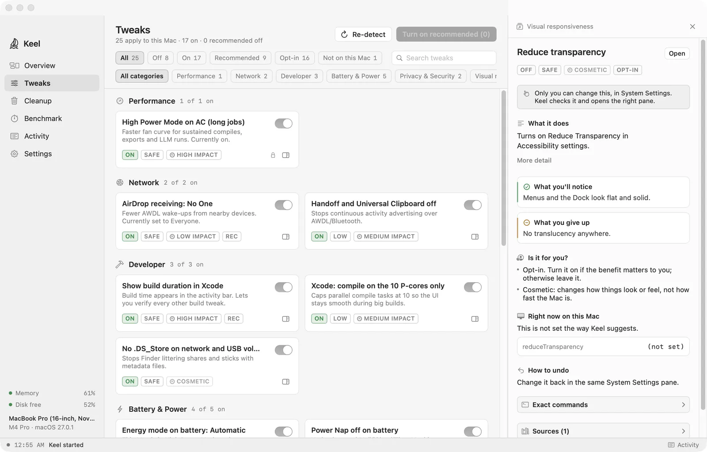
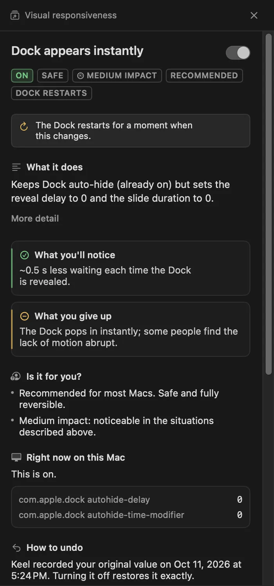
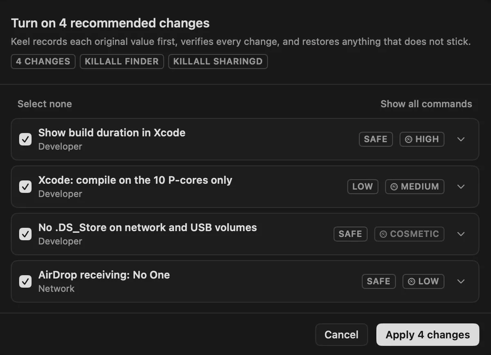
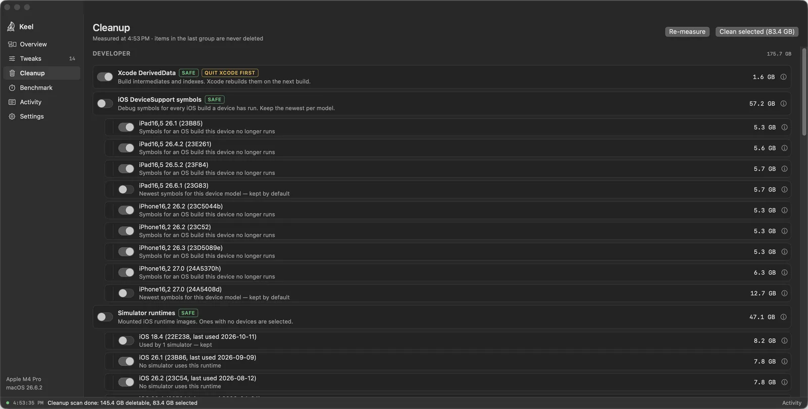
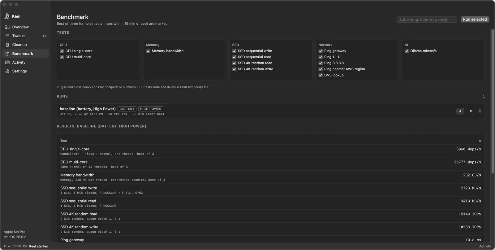

Tweaks
154 settings for macOS and common apps in 12 areas, plus cards for background updaters from 36 vendors that appear only when Keel finds them. Each shows its live state, its risk, an impact rating and the sources it is based on.
Tunes and cleans your Apple Silicon Mac. Every change shows its current value first, is recorded before it is made, and can be put back exactly.

What it does
154 settings for macOS and common apps in 12 areas, plus cards for background updaters from 36 vendors that appear only when Keel finds them. Each shows its live state, its risk, an impact rating and the sources it is based on.
Measures caches and leftovers on disk and deletes only what you select. A protected group is listed but never deleted.
CPU, GPU, memory, SSD, network and Ollama tests. Compare a run before a change with a run after it.
A plain-language log of everything Keel did, including the exact commands it ran. It stays on your Mac.
Tweaks
Keel reads the current value of every setting when it opens. A tweak that does not apply to your Mac shows N/A and the reason, for example battery settings on a desktop Mac or Xcode settings without Xcode. A small set is marked recommended. Everything else is opt-in.
com.apple.dock autohide-delay 0.
Counts are for the current version. Some tweaks only check a setting and open the right pane in System Settings, because only you can change it there.
Undo
Turning a tweak off puts back the value your Mac had before, not a guessed default. Keel records that value before it changes anything.

The current value, file or launchd property list is saved in ~/Library/Application Support/Keel/backups/ before the change.
A sheet lists every change and the exact commands. Changes that need administrator rights share one password prompt per batch, or run through the optional helper.
After applying, Keel reads each setting again. Anything that did not stick is restored from the recording.
Switch a tweak off to restore one setting. Restore everything Keel changed in Settings lists every recorded original and its commands before it runs.
Cleanup
Cleanup reads the actual size of Xcode and simulator data, package manager caches, app caches, logs and old installers. Each item says what it costs to rebuild, for example "Xcode rebuilds them on the next build".

Ollama and LM Studio models, the Hugging Face cache, Parallels, VMware and UTM virtual machines, Docker and OrbStack data, the Android and Flutter SDKs, the Photos library, Movies, Music, Downloads and build folders in your repositories. Keel lists their sizes and says where to manage them.
While APFS snapshots exist, deleted files can stay allocated. Keel reports the bytes it deleted and the change in free space separately, and says when snapshots are holding space. Time Machine snapshots can be removed here; others are left to the app that made them.
Keel refuses to delete top-level folders, Apple's system caches, Keychains and iCloud Drive data. Caches of a running app are skipped until you quit it. The Trash is emptied through Finder, and old installers are moved to the Trash, not deleted.
Benchmark
Run the benchmark, make a change, run it again and compare the two runs side by side. Keel shows the difference as a percentage with a noise band, and a difference inside the band is marked as noise.

CPU single and multi-core, GPU compute and bandwidth, memory bandwidth and latency, SSD sequential and 4K random, ping and DNS, network responsiveness, and Ollama tokens per second when Ollama is installed.
Throughput tests report the best of three samples. Latency tests report the median. SSD tests write and delete a 1 GiB temporary file.
Each run stores power source, power mode, thermal state and time since boot. Runs within 15 minutes of boot are marked, and differing conditions are flagged when you compare.
Limits
Keel does not "free RAM" or purge memory. A purge empties the file cache, which macOS fills again within minutes.
It never asks you to turn off System Integrity Protection, Gatekeeper or FileVault. It checks that they are on.
Network and kernel settings that do not help on Apple Silicon are left out. The full list, with reasons, is in the repository.
No account, no analytics, no crash reporting. Nothing about your Mac or your files is sent anywhere.
Nothing runs at login or in the background unless you turn it on.
Keel can tell you a new version exists. You download and install it yourself.
Privacy
Everything Keel records stays in ~/Library/Application Support/Keel/ and its preferences file. Only these two features use the network.
At most once a day, a request to api.github.com for the latest release. It sends no identifiers and no cookies. Turn it off in Settings › Updates.
Only when you start them: pings to your router, 1.1.1.1, 8.8.8.8 and the nearest AWS region, DNS lookups, and Apple's networkQuality tool. The Ollama test talks to Ollama on your own Mac.
Specifications
~/Library/Application Support/Keel/: recorded originals, activity log, benchmark runsFAQ
Some settings need root, for example energy settings, the firewall and DNS. Keel collects every root step in a batch and asks once. Turning on several tweaks together means one prompt.
An optional root helper that ships inside Keel.app, so you do not type your password for each batch. Install it in Keel's Settings, then allow Keel under System Settings › General › Login Items & Extensions.
It accepts requests only from Keel signed by the same developer and runs only a fixed list of operations, such as pmset keys, two sysctls, launchd jobs, DNS servers, the firewall and Time Machine exclusions. Each request is checked against an allow-list; it never runs a shell command. Remove it with Remove in Settings.
No. Without it, everything works. With it, Cleanup can also measure the Trash, Mail downloads and iPhone and iPad backups, which macOS hides from apps otherwise. Grant or remove it in System Settings › Privacy & Security › Full Disk Access.
The Trash is protected by macOS. Keel asks Finder to measure and empty it, the same as Finder › Empty Trash. The prompt appears the first time you do this.
The benchmark's gateway ping and local DNS test contact your router. macOS asks once, the first time those tests run.
Open Settings and use Restore everything Keel changed, or switch off every tweak that shows ON. Keep ~/Library/Application Support/Keel/backups/ until every tweak is off. Cleanup cannot be undone: deleted caches are rebuilt by the apps that own them.
~/Library/Application Support/Keel and Keel's preferences.The full steps and Terminal commands are in the read me.
Compare the checksum with the one on the release page, and ask Gatekeeper to assess the disk image:
shasum -a 256 ~/Downloads/Keel-*.dmg
spctl --assess --type open --context context:primary-signature -vv ~/Downloads/Keel-*.dmgOpen the disk image and drag Keel onto Applications. Nothing changes until you switch a tweak on and confirm.